SmatiProServices réalise vos travaux de peinture intérieure et extérieure avec soin, rapidité et professionnalisme. Devis gratuit sous 24h.
Depuis notre création, SmatiProServices s'est imposée comme une référence en peinture et rénovation dans la région de Muret. Notre priorité : un travail de qualité, livré dans les délais, avec un suivi personnalisé.
Obtenir mon devis gratuitDes finitions soignées et durables, avec des matériaux de haute qualité adaptés à chaque chantier.
Nous intervenons rapidement sur votre chantier et respectons les délais convenus, sans compromis.
Protection du mobilier, nettoyage en fin de chantier. Votre logement rendu impeccable après travaux.
Estimation précise sans surprise ni coûts cachés. Nous vous accompagnons du devis jusqu'à la réception.
Du simple rafraîchissement à la rénovation complète après sinistre, nous intervenons sur tous types de chantiers.
Murs, plafonds, boiseries, volets intérieurs. Mise en peinture complète ou simple rafraîchissement de vos pièces.
Ravalement de façade, peinture de volets et clôtures. Protection et embellissement de l'extérieur de votre bien.
Remise en état après dégât des eaux, incendie ou inondation. Intervention rapide, coordination avec votre assurance.
Enduits de lissage, ragréage, rebouchage, plâtrerie fine. Des surfaces parfaitement préparées avant mise en peinture.
Pose de papier peint, toile de verre, faïences décoratives. Large choix de matières et de finitions pour personnaliser vos espaces.
Effets décoratifs, béton ciré, stucco vénitien, peintures texturées. Donnez du caractère à votre intérieur.
Découvrez nos chantiers en images : à gauche l'état initial, à droite le résultat livré par notre équipe.
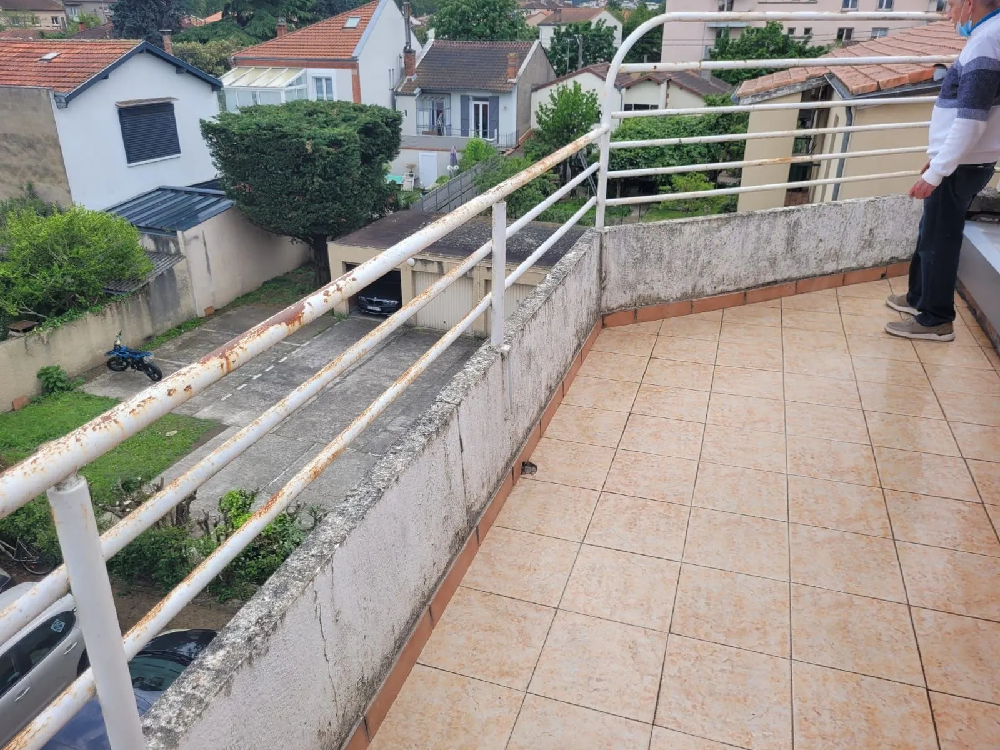
Avant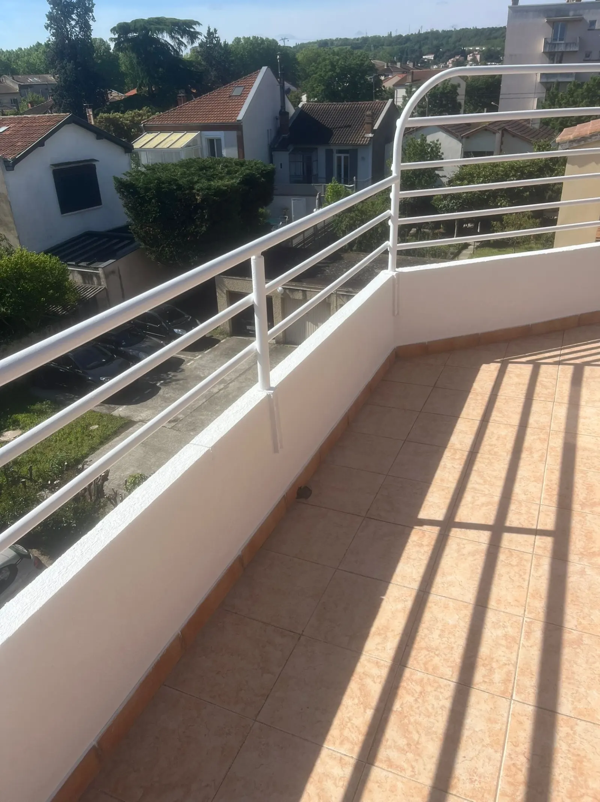
AprèsDécapage complet, traitement antirouille et peinture laquée blanche. Sol et muret remis à neuf.
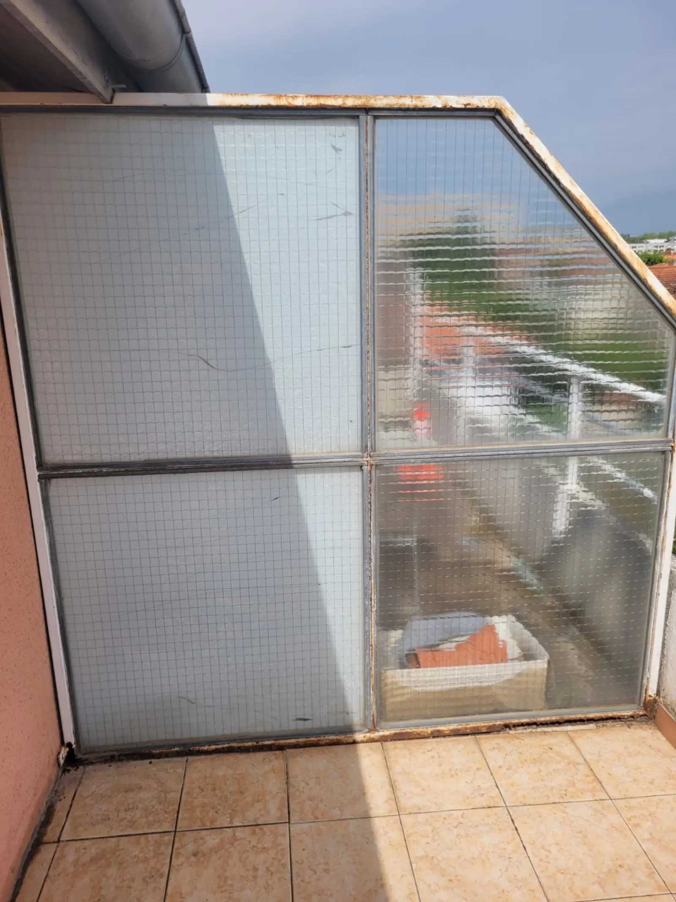
Avant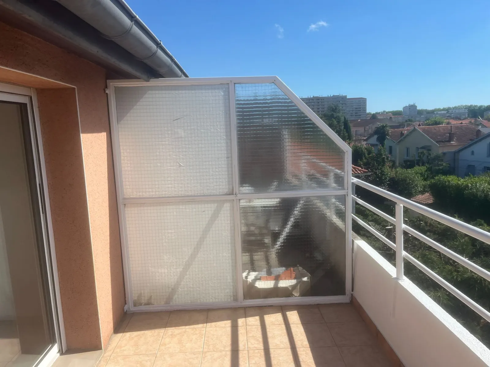
AprèsPonçage, retrait de la rouille et peinture extérieure résistante aux intempéries.
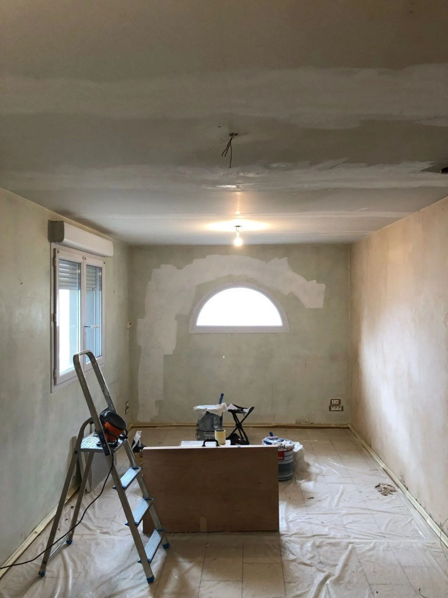
Avant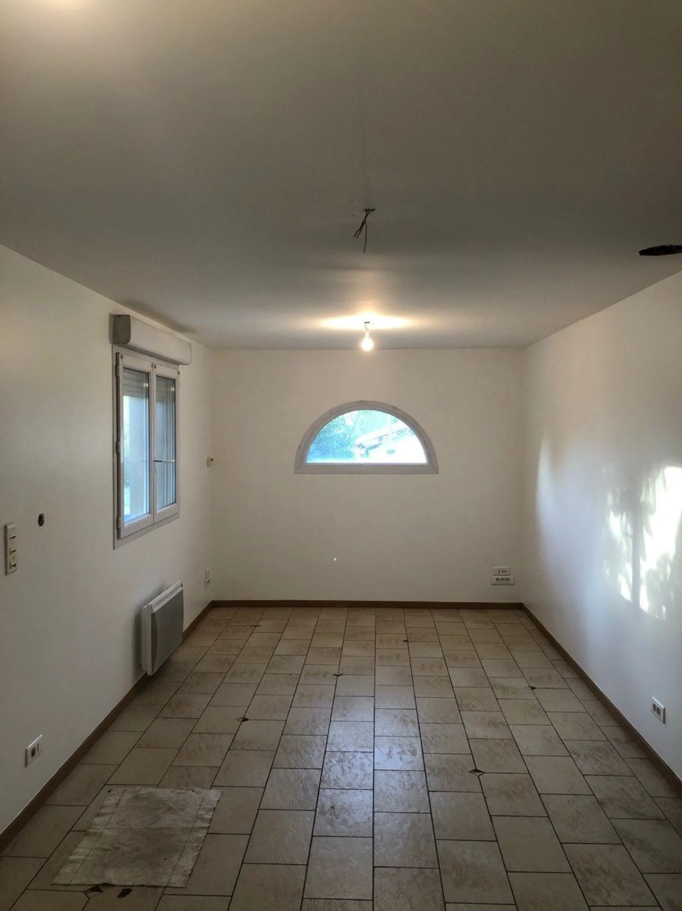
AprèsReprise des enduits, mise en peinture des murs et plafond. Finition mate haut de gamme.
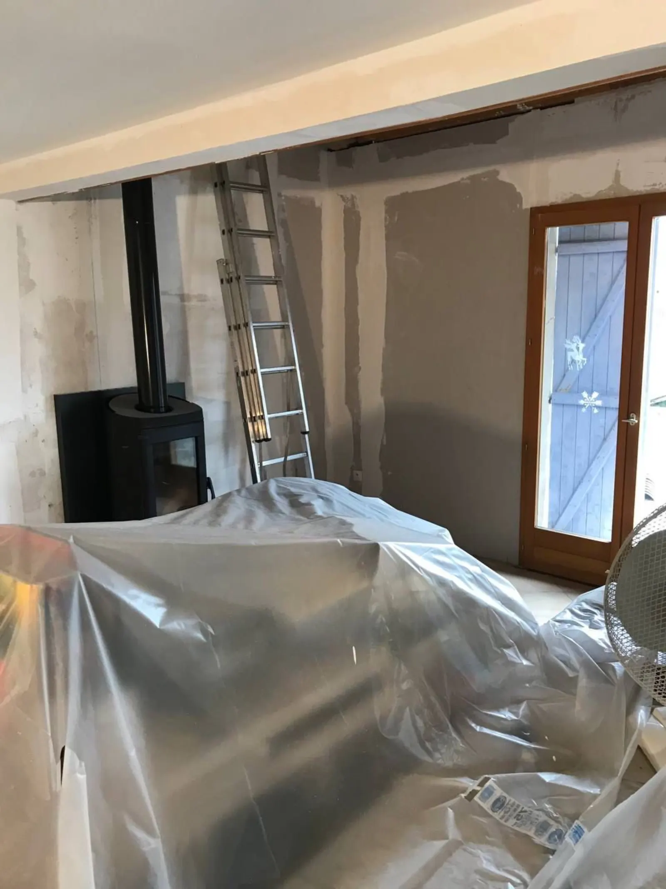
Avant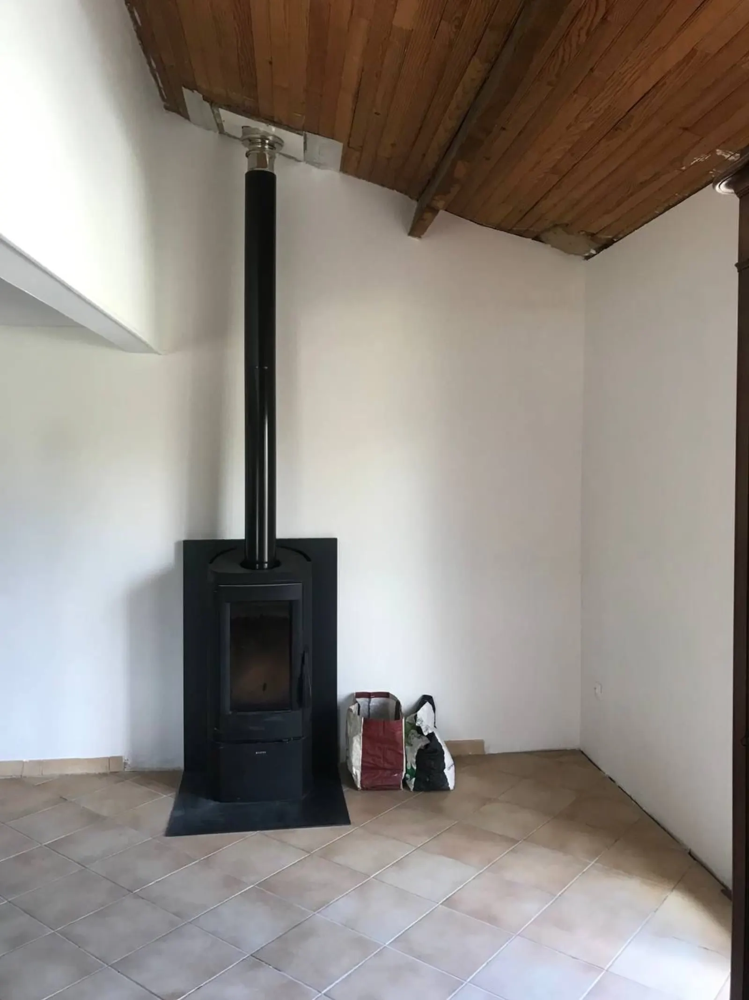
AprèsReprise complète des murs et plafonds après installation du poêle. Peinture blanche unie.
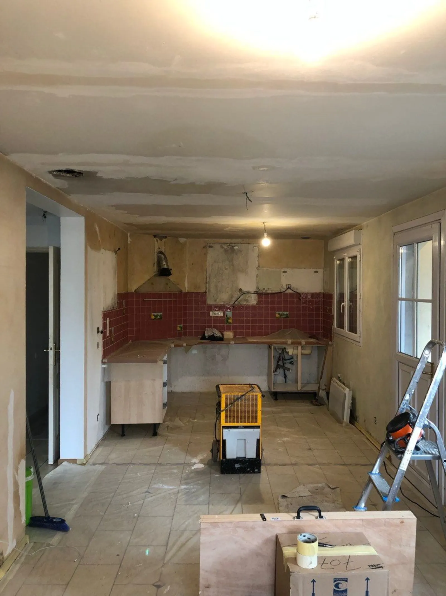
Avant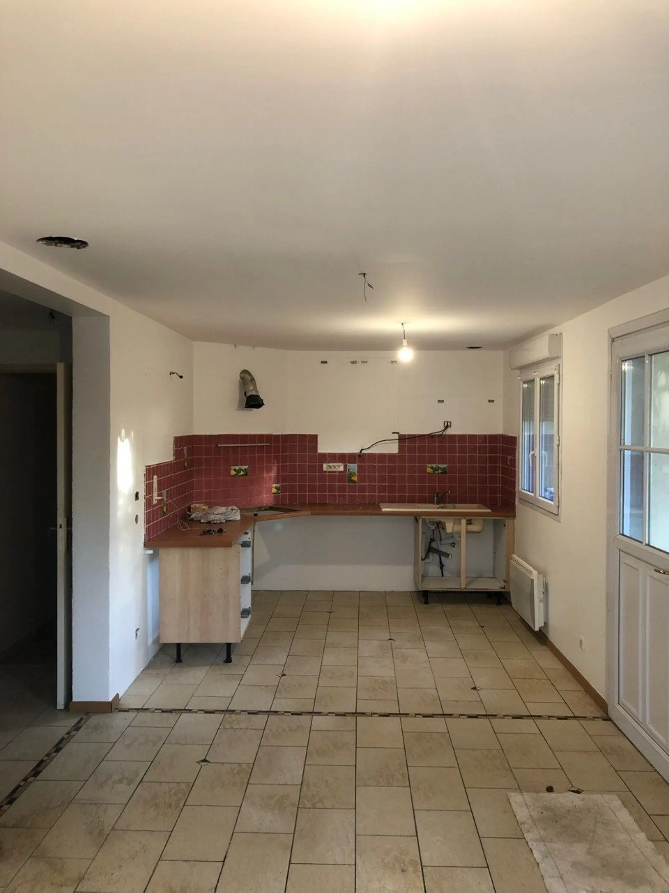
AprèsDépose de l'ancien mobilier, reprise complète des plafonds et préparation des supports avant pose neuve.
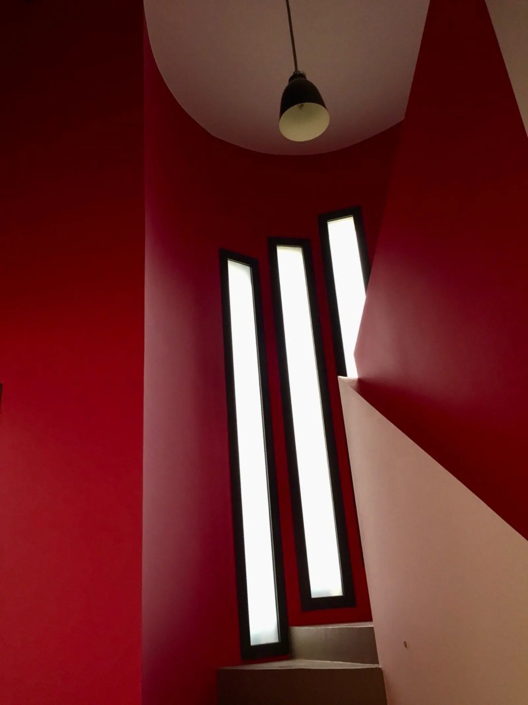
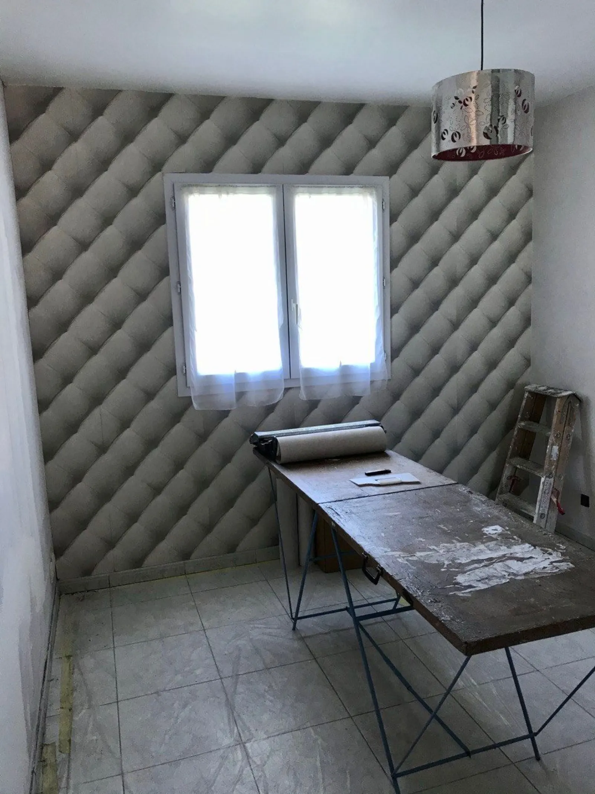
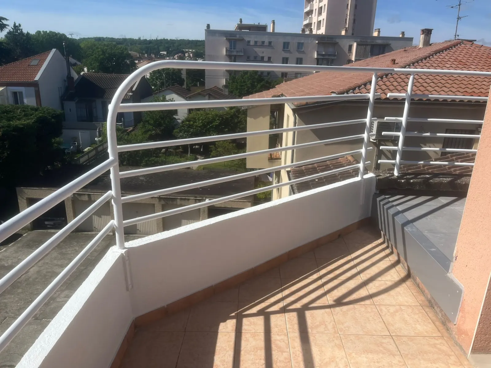
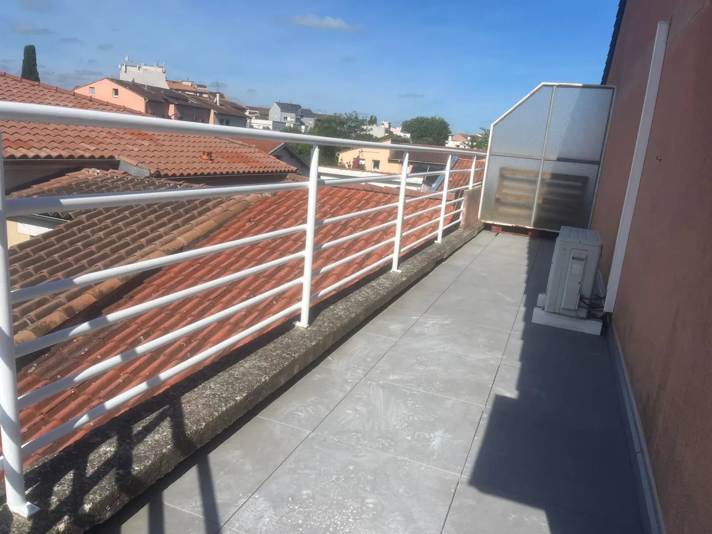
De votre demande à la réception de chantier, un suivi simple et transparent en 4 étapes.
Remplissez le formulaire ou appelez-nous. Décrivez vos travaux et envoyez des photos si possible.
Nous venons chez vous pour évaluer le chantier et vous remettre un devis détaillé et gratuit sous 24h.
Nous convenons ensemble d'une date d'intervention adaptée à votre emploi du temps.
Nos artisans réalisent vos travaux avec soin. Chantier nettoyé à la livraison, satisfaction garantie.
"J'ai fait appel à SmatiProServices pour des travaux de peinture et je suis vraiment très satisfait du résultat. Travail sérieux, propre et réalisé avec beaucoup de professionnalisme. L'équipe est efficace et attentive aux détails."
"Travail très professionnel, rapide, efficace et de qualité. Ils m'ont également rendu un grand service sur une autre problématique pas du tout en lien avec le sinistre que j'avais. Je recommande à 100% !"
"J'ai fait appel à cette entreprise pour repeindre le mur de mon salon. Travail de qualité, efficacité et professionnalisme. Je recommande vivement Smati Pro Services."
Basés à Muret (31600), nous couvrons la ville et les communes environnantes. Contactez-nous pour vérifier votre secteur.
Une expertise locale reconnue, du simple rafraîchissement à la rénovation complète après sinistre.
Le ravalement de façade est une obligation légale tous les 10 ans dans certaines communes de Haute-Garonne, dont Muret et Toulouse Métropole. SmatiProServices intervient pour le nettoyage haute pression, le traitement anti-mousse, la réparation des fissures et la mise en peinture de votre façade avec des produits résistants aux UV et aux intempéries.
Nous travaillons dans le respect des règles d'urbanisme locales et fournissons les documents nécessaires pour votre déclaration préalable de travaux en mairie. Devis gratuit sous 24h après visite sur place pour évaluer précisément la surface et l'état de votre façade.
Spécialistes de la remise en état après dégât des eaux, incendie ou inondation, nous intervenons en urgence sous 48h sur Muret, Toulouse et alentours. Nous coordonnons directement avec votre assureur et fournissons l'ensemble des documents nécessaires : devis détaillé, photos avant/après, factures conformes à votre contrat d'assurance.
Nous prenons en charge la totalité des travaux : asséchement, dépose des éléments endommagés, traitement anti-humidité, reprise des enduits, peinture finale. Garantie décennale incluse.
Que vous soyez en rénovation complète ou simple rafraîchissement, nous traitons murs, plafonds, boiseries et volets intérieurs avec un soin particulier sur la préparation des supports : ponçage, rebouchage, enduits de lissage. Cette étape, souvent négligée, fait toute la différence sur la finition.
Large choix de finitions : mate haut de gamme pour les pièces de vie, satinée pour les pièces humides (cuisine, salle de bain), velours pour les chambres. Nous utilisons exclusivement des peintures de qualité professionnelle, faibles en COV pour préserver la qualité de l'air intérieur.
Notre commune de référence où nous sommes implantés au 34 avenue Pierre 2 d'Aragon. Intervention quotidienne sur tout type de chantier, du studio à la maison individuelle.
Nous nous déplaçons régulièrement sur Toulouse, principalement au sud (Empalot, Saint-Michel, Rangueil) et dans les quartiers résidentiels du périphérique.
Commune limitrophe à Muret, intervention rapide pour maisons individuelles, appartements et locaux commerciaux. Délai d'intervention raccourci.
Zone résidentielle avec nombreuses maisons des années 70-90 nécessitant rafraîchissement intérieur ou ravalement de façade. Devis gratuit sur place.
Intervention sur tout type de bien : maisons neuves, rénovations, copropriétés. Peinture intérieure et extérieure, ravalement complet.
Commune voisine où nous intervenons régulièrement pour des chantiers de peinture complète et de rénovation après dégât des eaux.
Intervention sur Auterive et les communes du sud-Toulouse pour peinture intérieure, ravalement et rénovation complète.
Pinsaguel, Frouzins, Roques, Eaunes, Labarthe-sur-Lèze, Saint-Lys, Lavernose-Lacasse... Contactez-nous pour vérifier votre secteur.
Les réponses aux questions que nous posent le plus souvent nos clients à Muret, Toulouse et alentours.
Devis gratuit et sans engagement sous 24h. Notre équipe est disponible 6j/7.
Réponse garantie sous 24h. Remplissez le formulaire ou contactez-nous directement.